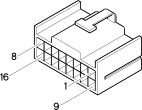

M40C Integrated services control unit ( FACIA )
- Path
- Electrical equipment > Connectors > M Intermittent and timed electronic devices,.. > M40 Integrated services control unit > M40C Integrated services control unit ( FACIA )
- Kind
- connector pinout (pin -> wire colour -> other end)
- Applies to
- engines: 1.6 TS , 1.8 TS, 2.0 JTS, 2.5 V6, 3.2 V6, 1.9 JTD 8v , 1.9 JTD 16v, 2.0 JTS, 2.4 JTD 10v, 2.4 JTD 20v; production: fino a 03/98, da 04/98 a 02/99, da 03/99 a 01/00
- Interactive page
- https://sloeber94.github.io/elrnDB-a156/en/#/3236898
Applies to: engines: 1.6 TS , 1.8 TS, 2.0 JTS, 2.5 V6, 3.2 V6, 1.9 JTD 8v , 1.9 JTD 16v, 2.0 JTS, 2.4 JTD 10v, 2.4 JTD 20v; production: fino a 03/98, da 04/98 a 02/99, da 03/99 a 01/00

Wiring | Colour |
|---|---|
NERO (black) |
Pin | Cable | Destination | |||
|---|---|---|---|---|---|
Sec.. | Colour | Nodo | Connect. | Pin | |
BV (white with green stripe) | |||||
RG (red with yellow stripe) | |||||
BL (white with blue stripe) | |||||
CB (orange with white stripe) | |||||
HN (grey with black stripe) | |||||
GV (yellow with green stripe) | |||||
M (brown) | |||||
HR (grey with red stripe) | |||||
R (red) | |||||
MB (brown with white stripe) | |||||
Topics linked from this page (9)
- 20 FACIA
- D1 Front / dashboard connection
- D20 /Rear dashboard coupling
- D21A Dashboard/air conditioning-heater connection ( AIR CONDITIONING )
- G35 Ashtray light
- H1B Ignition switch ( FACIA )
- H5B Steering column switch unit ( FACIA )
- P20A Car radio ( FACIA )
- P50 Cigar lighter / current socket
Topics that link to this page (53)
- 5020A12 heater casing - r+r with facia removed
- 5020B31 air distribution flap control cable(one) - r r
- 5020B42 air mixer flap control cable - r+r
- 5020B60 outside air/recirculation flap control actuator - r+r following wiring check
- 5040C12 air conditioner housing - r r with facia disconnected
- 5040D52 air inlet and recirculation flap actuator - r r
- 5040D76 air contitioner distribution flap control motor - r r
- 5505A18 multi-function control unit - r r
- D1 Front / dashboard connection ( FACIA )
- D1 Front / dashboard connection ( FACIA )
- D1 Front / dashboard connection ( FACIA )
- D1 Front / dashboard connection ( FACIA )
- D1 Front / dashboard connection ( FACIA )
- D1 Front / dashboard connection ( FACIA )
- D1 Front / dashboard connection ( FACIA )
- D1 Front / dashboard connection ( FACIA )
- D1 Front / dashboard connection ( FACIA )
- D20A /Rear dashboard coupling ( FACIA )
- D20A /Rear dashboard coupling ( FACIA )
- D20B /Rear dashboard coupling ( FACIA )
- D20B /Rear dashboard coupling ( FACIA )
- D20B /Rear dashboard coupling ( FACIA )
- D20 /Rear dashboard coupling ( FACIA )
- D20 /Rear dashboard coupling ( FACIA )
- D20 /Rear dashboard coupling ( FACIA )
- D20 /Rear dashboard coupling ( FACIA )
- D20 /Rear dashboard coupling ( FACIA )
- D20 /Rear dashboard coupling ( FACIA )
- D20 /Rear dashboard coupling ( FACIA )
- D21A Dashboard/air conditioning-heater connection ( FACIA )
- D21A Dashboard/air conditioning-heater connection ( FACIA )
- D21A Dashboard/air conditioning-heater connection ( FACIA )
- D21A Dashboard/air conditioning-heater connection ( FACIA )
- D21A Dashboard/air conditioning-heater connection ( FACIA )
- D21B Dashboard/air conditioning-heater connection ( FACIA )
- G35 Ashtray light ( FACIA )
- H1B Ignition switch ( FACIA )
- H1B Ignition switch ( FACIA )
- H1B Ignition switch ( FACIA )
- H1B Ignition switch ( FACIA )
- H1B Ignition switch ( FACIA )
- H1B Ignition switch ( FACIA )
- H5B Steering column switch unit ( FACIA )
- H5B Steering column switch unit ( FACIA )
- H5B Steering column switch unit ( FACIA )
- H5B Steering column switch unit ( FACIA )
- P20A Car radio ( FACIA )
- P20A Car radio ( FACIA )
- P20A Car radio ( FACIA )
- P20A Car radio ( FACIA )
- P50 Cigar lighter / current socket ( FACIA )
- P50 Cigar lighter / current socket ( FACIA )
- P50 Cigar lighter / current socket ( FACIA )